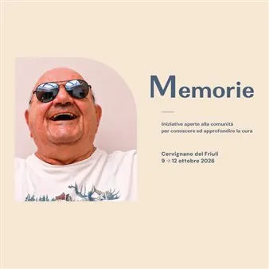

da ven 9 ott a lun 12 ott
Memorie
La rassegna Memorie si svolge a Cervignano del Friuli dal 9 al 12 ottobre 2026, con un programma di iniziative gratuite e aperte alla comunità dedicate al valore della cura delle persone, delle relazioni, dei luoghi e delle storie. Dettagli Principali della Rassegna…
 Indicazioni
Indicazioni
- Costi e prenotazioni
- Costo non indicato · Prenotazione non indicata
- Programma
- Programma da verificare. Apri la fonte ufficiale per orari e possibili aggiornamenti.
- In caso di maltempo
- Nessuna indicazione specifica pubblicata.
- Note
- Acquisito automaticamente dalla fonte.
L’EVENTO
Descrizione completa
La rassegna Memorie TgQPHd|||[] si svolge a Cervignano del Friuli TgQPHd|||[] dal 9 al 12 ottobre 2026 TgQPHd|||[] TgQPHd|||[[[null,null,null,null,null,null,null,null,null,null,null,null,[247864,null,0]]]] , con un programma di iniziative gratuite e aperte alla comunità dedicate al valore della cura delle persone, delle relazioni, dei luoghi e delle storie.
TgQPHd|||[]
Dettagli Principali della Rassegna TgQPHd|||[] Inaugurazione: TgQPHd|||[] Venerdì 9 ottobre 2026 alle ore 17:30 presso la Loggia del Municipio TgQPHd|||[] di Cervignano del Friuli. TgQPHd|||[] TgQPHd|||[] Eventi e Attività: TgQPHd|||[] Mostre fotografiche, percorsi esperienziali, incontri di approfondimento e momenti di prevenzione dedicati all'invecchiamento e alle demenze. TgQPHd|||[] TgQPHd|||[] Passeggiata Salutare: TgQPHd|||[] Domenica 11 ottobre 2026 con l'evento “Passeggiata lungo il fiume silente” TgQPHd|||[] / FVG in Movimento TgQPHd|||[] (ritrovo alle ore 8:30 in Piazza Indipendenza davanti al Municipio). TgQPHd|||[] Costo: TgQPHd|||[] Tutti gli appuntamenti sono gratuiti TgQPHd|||[] . TgQPHd|||[] Mostre ed Esperienze Permanenti (9-12 Ottobre) TgQPHd|||[] Mostra Fotografica: TgQPHd|||[] Allestita per tutta la durata dell'evento, offre una narrazione visiva incentrata sulla memoria storica e sulle dinamiche della cura della comunità. TgQPHd|||[] TgQPHd|||[] TgQPHd|||[] La Stanza della Dispercezione: TgQPHd|||[] Un percorso esperienziale unico che permette ai visitatori di comprendere da vicino e "vivere" le difficoltà e le alterazioni sensoriali affrontate quotidianamente dalle persone affette da demenza o Alzheimer. TgQPHd|||[] TgQPHd|||[] TgQPHd|||[] TgQPHd|||[] TgQPHd|||[]
Calendario degli Appuntamenti Speciali TgQPHd|||[] Venerdì 9 Ottobre 2026 TgQPHd|||[] TgQPHd|||[] Ore 17:30 - Inaugurazione Ufficiale: TgQPHd|||[] Apertura della rassegna presso la Loggia del Municipio TgQPHd|||[] di Cervignano del Friuli, alla presenza dei promotori della Cooperativa Sociale Itaca TgQPHd|||[["https://lagazzetta.itaca.coop/2026/09/29/memorie-approda-a-cervignano-quattro-giorni-per-conoscere-e-prendersi-cura/",null,null,[null,null,null,null,null,null,null,null,null,null,null,null,null,null,null,[{"1218":[16,null,null,null,[1]]}]],16,null,"“MEMORIE” APPRODA A CERVIGNANO: QUATTRO GIORNI ...","CERVIGNANO DEL FRIULI – Conoscere per comprendere, prevenire e accompagnare senza lasciare sole le persone e le famiglie. Dal 9 al 12 ottobre, “Memorie” approda a Cervignano del Friuli con quattro giornate gratuite e aperte alla comunità dedicate alla cura delle persone, delle relazioni, dei luoghi e delle storie. Promossa dalla Cooperativa sociale Itaca, con il patrocinio del Comune di Cervignano del Friuli e in collaborazione con la Casa di riposo Sarcinelli, la rassegna riunirà mostra fotografica, screening cognitivi di primo livello, una conferenza sull'invecchiamento e le fragilità, la Stanza della Dispercezione, una passeggiata di salute e un appuntamento con Bambam Street Clown.","https://encrypted-tbn2.gstatic.com/images?q\u003dtbn:ANd9GcQC4Ozb5MltjhUqBhAs_6hbVG66wTkN_41Qlm95OfDjB9AxpDjhetSbXgQE38vrNDb0yIaG54Byy31XtFc","Cooperativa Sociale Onlus Itaca","https://encrypted-tbn2.gstatic.com/faviconV2?url\u003dhttps://lagazzetta.itaca.coop\u0026client\u003dAIM\u0026size\u003d128\u0026type\u003dFAVICON\u0026fallback_opts\u003dTYPE,SIZE,URL",[[1791359369432128,100550305,2551553895],null,null,null,null,[[0,18]]],null,"1e12a4dc-3b0c-417f-916b-39cbe385c73e"]] e dei partner istituzionali. TgQPHd|||[] Sabato 10 Ottobre 2026 TgQPHd|||[] TgQPHd|||[] Screening Cognitivi: TgQPHd|||[] Sessioni di screening gratuiti di primo livello dedicati alla prevenzione e alla salute del cervello. TgQPHd|||[] TgQPHd|||[] Conferenza di Approfondimento: TgQPHd|||[] Incontro pubblico incentrato sui temi dell'invecchiamento attivo, della gestione delle fragilità e del supporto alle famiglie. TgQPHd|||[] TgQPHd|||[] TgQPHd|||[] TgQPHd|||[] TgQPHd|||[] Domenica 11 Ottobre 2026 TgQPHd|||[] TgQPHd|||[] Ore 8:30 - Passeggiata della Salute: TgQPHd|||[] Ritrovo in Piazza Indipendenza (davanti al Municipio) per l'evento “Passeggiata lungo il fiume silente TgQPHd|||[] TgQPHd|||[false,"",false,{"u":0}] TgQPHd|||[] TgQPHd|||[] ” TgQPHd|||[] TgQPHd|||[] . L'attività fa parte del circuito FVG in Movimento / 10mila passi di Salute TgQPHd|||[] TgQPHd|||[false,"",false,{"u":0}] TgQPHd|||[] TgQPHd|||[] TgQPHd|||[] TgQPHd|||[] ed è una camminata guidata aperta a tutti. TgQPHd|||[] TgQPHd|||[] Animazione e Intrattenimento: TgQPHd|||[] Nel corso della giornata si terrà lo spettacolo e l'intrattenimento di strada con BamBam Street Clown TgQPHd|||[] TgQPHd|||[false,"",false,{"u":0}] TgQPHd|||[] TgQPHd|||[] TgQPHd|||[] TgQPHd|||[] , pensato per coinvolgere le famiglie in momenti di leggerezza. TgQPHd|||[]
IL PROGRAMMA
Programma e orari
Appuntamenti raccolti dalle fonti elencate. Dove manca un orario, non è ancora disponibile in questa scheda.
Programma pubblicato
- Ore 17:30 - Inaugurazione Ufficiale:
- Ore 8:30 - Passeggiata della Salute:
INFORMAZIONI UTILI
Prima di partire
- Controllare la fonte prima di partire.
ORGANIZZAZIONE